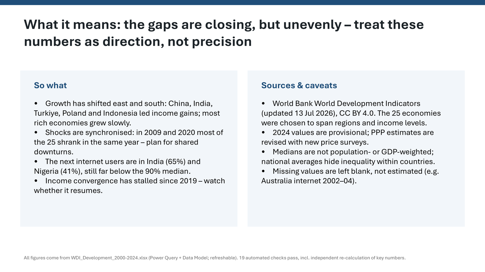
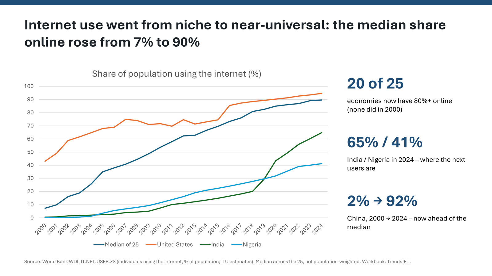
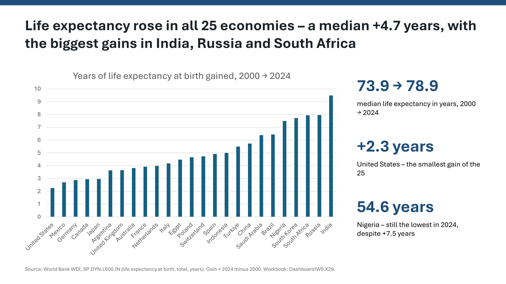
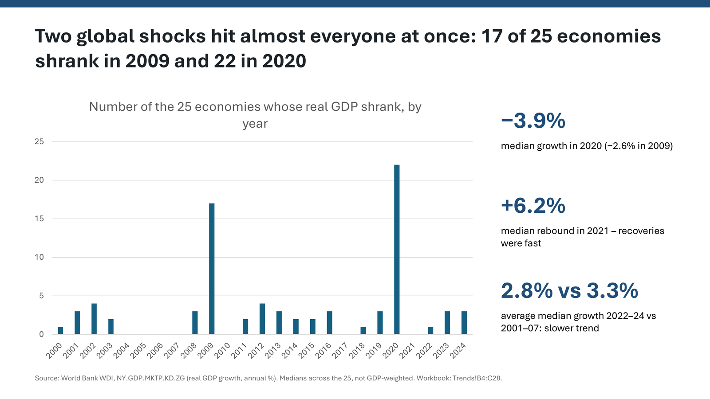
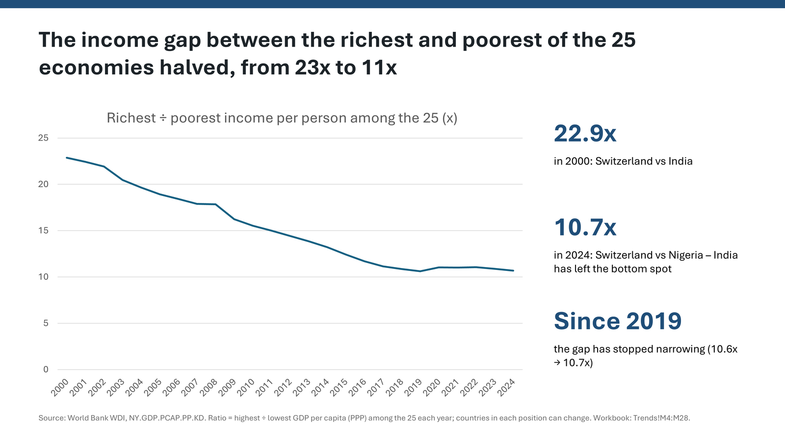
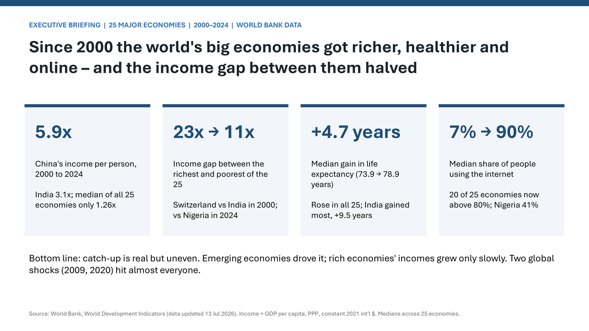
One request.
39 minutes.
One AI agent researched public data, built the Excel analysis, then designed this briefing.
One request,
in plain English.
Research World Bank data on how 25 major economies developed from 2000 to 2024: income per person, economic growth, life expectancy and internet use. Use the official World Development Indicators.
With Excel MCP, build a refreshable Excel analysis in this folder: load the data with Power Query, model it, add a few clear charts, and check the key numbers.
Then, as an expert in executive presentations, use PowerPoint MCP to build a 7-slide briefing of the highlights: one insight per slide with a headline that states it, native charts with numbers from the workbook, sources and caveats, and speaker notes. Export each slide and check it visually. Keep Excel and PowerPoint visible.
First, find
the right data.
- 01World Bank data service, official indicators
- 02Income, growth, life expectancy, internet
- 0325 economies × 25 years
- 04Coverage checked for gaps
Build the
analysis.
- Power Query
- Data Model + DAX
- Analysis + checks
- Charts
- PivotTable
- Refresh all
Every number on a slide
comes from Excel.
Design the
briefing.
- Template slide
- Export and look
- Copy the design
- Native charts
- Recover + check
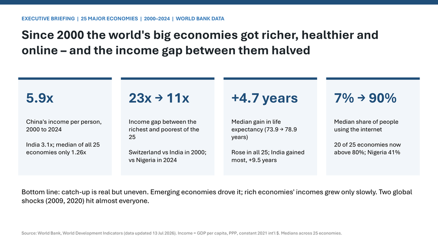
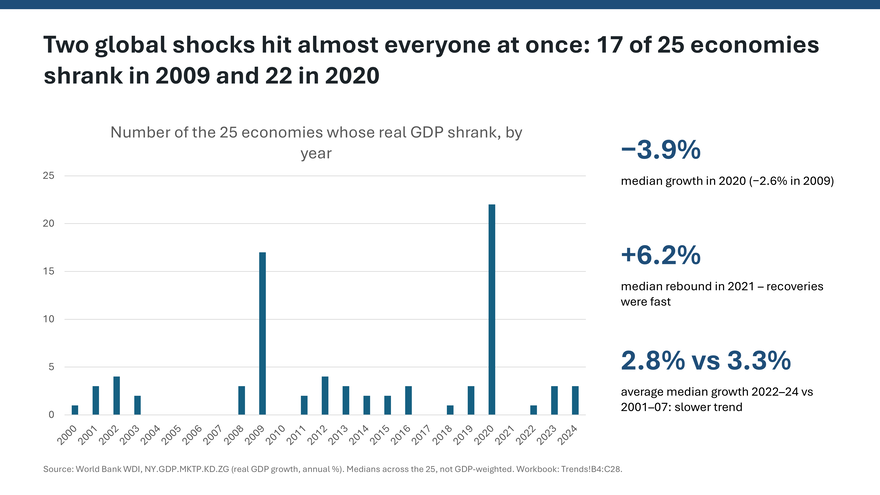
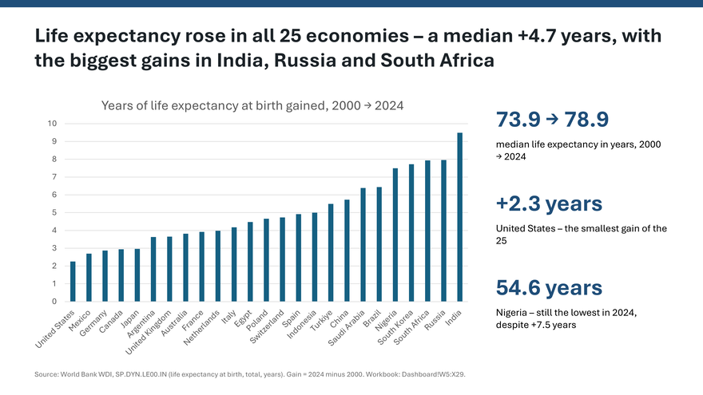
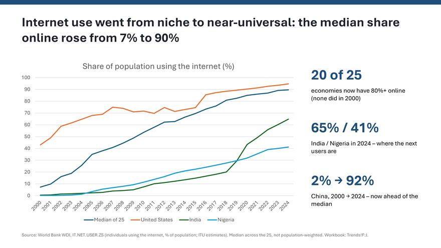
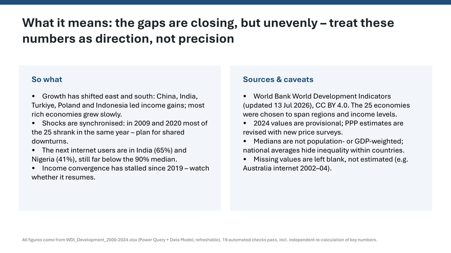